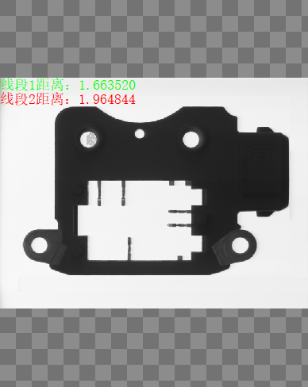
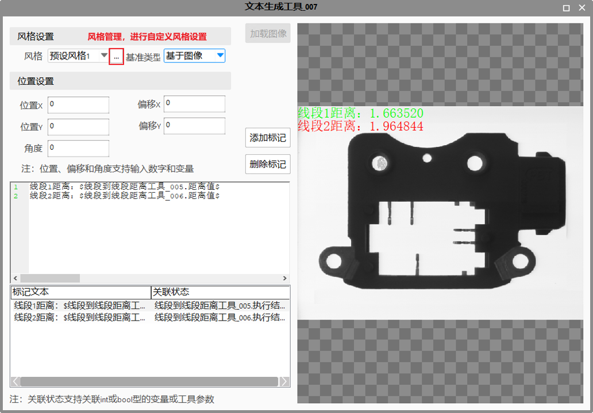
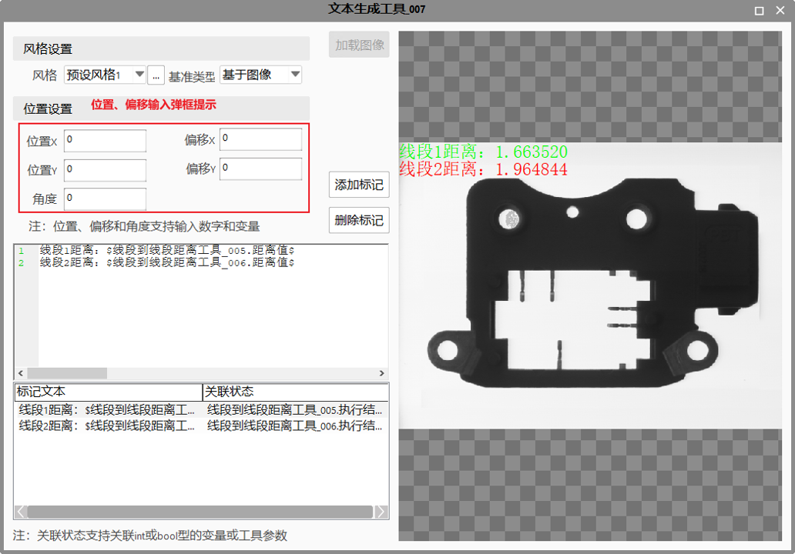
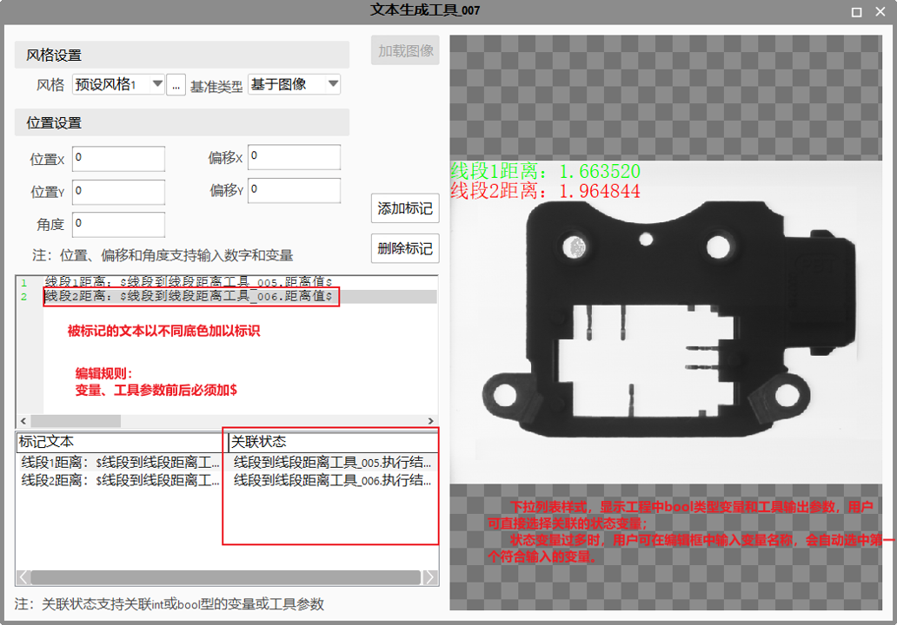

Hiển thị văn bản lên ảnh theo vị trí và độ lệch được chỉ định. Hiệu ứng hiển thị thực tế như Hình 1.

| Tên tham số | Mô tả tham số |
|---|---|
| Cửa sổ thuộc tính | Không có |
| Cửa sổ hình ảnh | Không có |
| Chuỗi dữ liệu | Không có |
| Giao diện nâng cao | Xem giải thích chi tiết |
| Phân loại | Tên tham số | Mô tả tham số |
|---|---|---|
| Cửa sổ giám sát | Kết quả thực thi | Kết quả thực thi của công cụ. |
| Thời gian thực thi | Thời gian công cụ thực thi. | |
| Chuỗi dữ liệu | Văn bản hiển thị | Chuỗi ký tự được xuất ra để hiển thị. |
Giao diện nâng cao của công cụ tạo văn bản như minh họa trong Hình 2.

Hỗ trợ quản lý kiểu hiển thị. Trong quản lý kiểu hiển thị có sẵn một kiểu mặc định (không thể chỉnh sửa) và tối đa 16 kiểu tùy chỉnh. Người dùng có thể nhấp vào nút quản lý kiểu ở bên phải (như trong Hình 2) để mở giao diện quản lý kiểu, thêm/xóa/đổi tên kiểu hiển thị, hoặc tùy chỉnh các thuộc tính như màu văn bản mặc định, màu OK/NG, màu nền văn bản và độ trong suốt của nền, phông chữ và cỡ chữ, viền văn bản, v.v.
Có thể chọn loại tham chiếu là “Dựa trên ảnh” hoặc “Dựa trên cửa sổ”. Nếu chọn “Dựa trên ảnh”, văn bản hiển thị sẽ thay đổi theo việc dịch chuyển/phóng to ảnh; nếu chọn “Dựa trên cửa sổ”, văn bản có kích thước cố định và vị trí được xác định theo vị trí trong cửa sổ hiển thị, không bị ảnh hưởng bởi phóng to/dịch chuyển ảnh.
Người dùng có thể thiết lập vị trí hiển thị văn bản. Có thể nhập hằng số để cố định vị trí, hoặc nhập biến (không hỗ trợ kiểu bool và string) để văn bản thay đổi vị trí theo giá trị biến.
Thiết lập vị trí và độ lệch hỗ trợ hộp gợi ý, khi nhập sẽ hiện danh sách biến phù hợp để người dùng chọn (xem Hình 3).

Người dùng có thể nhập văn bản cần hiển thị vào ô chỉnh sửa. Lưu ý, nếu cần hiển thị giá trị biến hoặc tham số công cụ, phải đặt giữa hai dấu $.
Người dùng có thể chọn chuỗi ký tự cần đánh dấu và nhấn nút “Thêm đánh dấu” để đưa vào danh sách đánh dấu. Trong danh sách này, nếu liên kết với một biến trạng thái, chuỗi ký tự tương ứng sẽ hiển thị màu khác nhau theo trạng thái. Xem Hình 4.

Kiểu hiển thị của giao diện nâng cao đồng bộ với kiểu hiển thị của toàn dự án. Khi dự án thay đổi kiểu hiển thị, giao diện nâng cao của công cụ cũng cập nhật theo.
Giao diện nâng cao của công cụ hỗ trợ tải ảnh tùy chỉnh. Nếu dự án chưa thêm cửa sổ xem (View), người dùng có thể tải ảnh để quan sát hiệu ứng hiển thị văn bản.
Xem “\Samples\文本生成工具.gvp”, kết quả chạy hiển thị tại View-1.